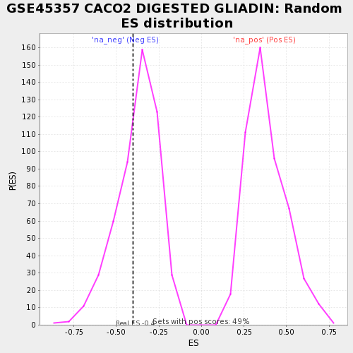

| | | Dataset | testA |
| Phenotype | NoPhenotypeAvailable |
| Upregulated in class | na_neg |
| GeneSet | GSE45357 CACO2 DIGESTED GLIADIN |
| Enrichment Score (ES) | -0.4001972 |
| Normalized Enrichment Score (NES) | -1.0560015 |
| Nominal p-value | 0.36811024 |
| FDR q-value | 1.0 |
| FWER p-Value | 1.0 |
Table: GSEA Results Summary
 Fig 1: Enrichment plot: GSE45357 CACO2 DIGESTED GLIADIN
Fig 1: Enrichment plot: GSE45357 CACO2 DIGESTED GLIADIN
Profile of the Running ES Score & Positions of GeneSet Members on the Rank Ordered List
| PROBE | GENE SYMBOL | GENE_TITLE | RANK IN GENE LIST | RANK METRIC SCORE | RUNNING ES | CORE ENRICHMENT | | 1 | ACAP1 | | | 15 | 1.812 | -0.1720 | No |
| 2 | GPLD1 | | | 22 | -1.696 | -0.1502 | No |
| 3 | PKHD1 | | | 34 | -2.066 | -0.2075 | Yes |
| 4 | CUX2 | | | 41 | -2.337 | -0.1259 | Yes |
| 5 | CAPS2 | | | 48 | -2.812 | 0.0000 | Yes |
Table: GSEA details [plain text format]

Fig 2: GSE45357 CACO2 DIGESTED GLIADIN: Random ES distribution
Gene set null distribution of ES for GSE45357 CACO2 DIGESTED GLIADIN